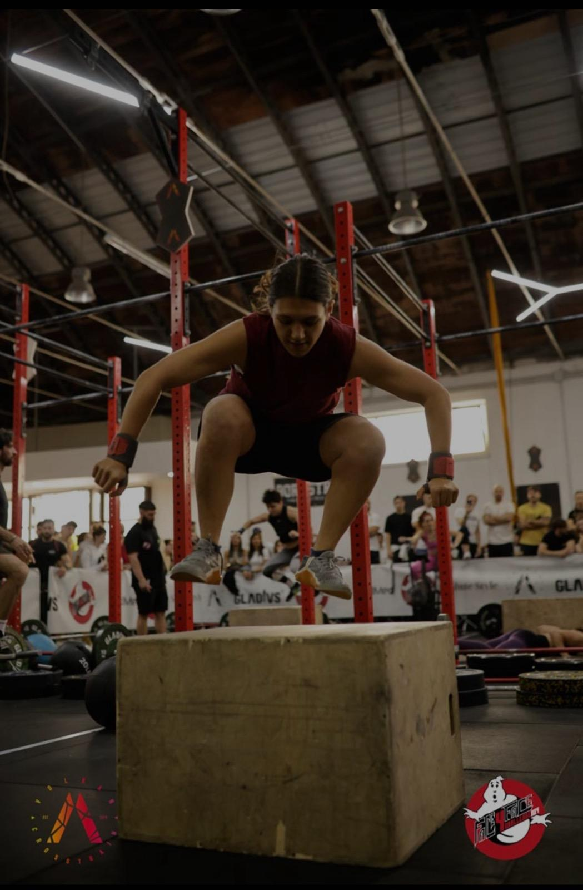
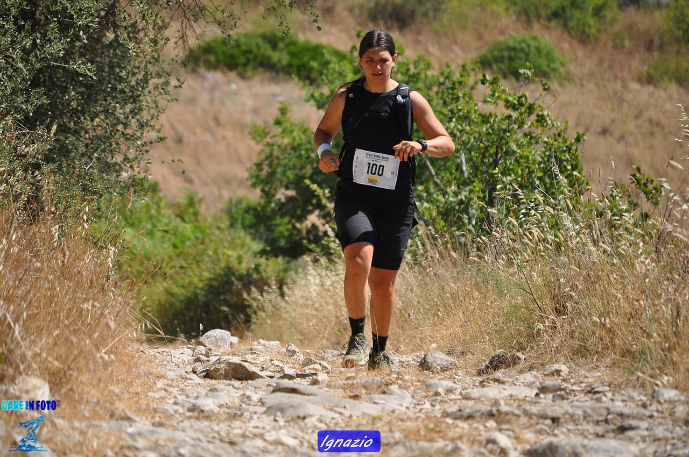

Music is another of my greatest passions.

I’ve been practicing CrossFit for 5 years;
it’s the sport that represents me the most because it combines different disciplines,
such as weightlifting, gymnastics, and aerobic training.
CrossFit has helped me a lot, especially with performing small everyday movements.
I’ve taken part in two CrossFit competitions, and I hope to do more in the future.

I started running 3 years ago, and I run 3–4 times a week.
I’ve taken part in several competitions such as half marathons and marathons.
I’ve also participated in trail running races, which take place in the mountains.
My favorite distance is the marathon.
Running has helped me a lot in managing physical fatigue, but above all mental fatigue.